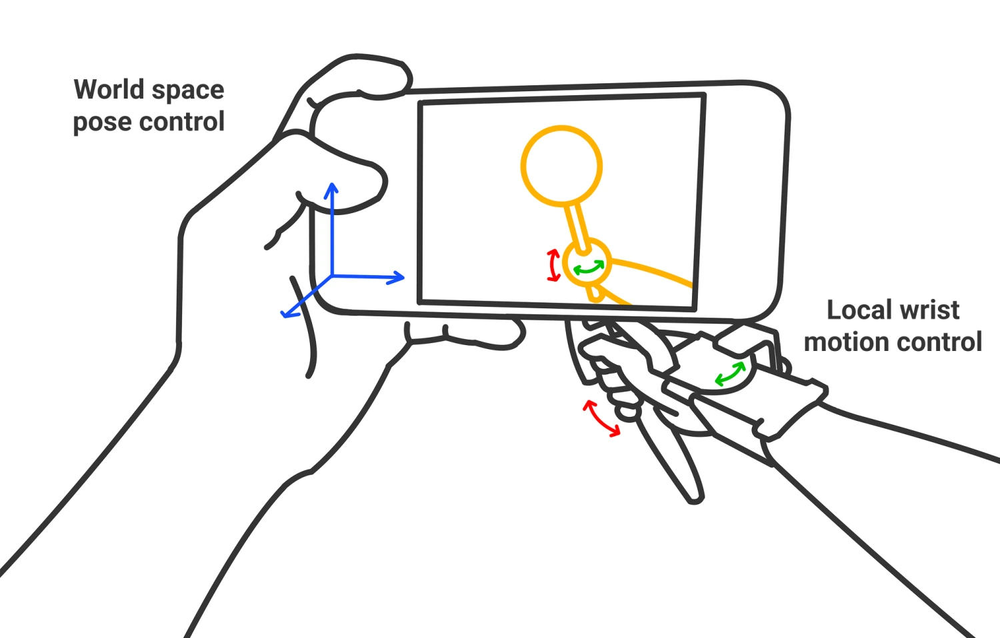
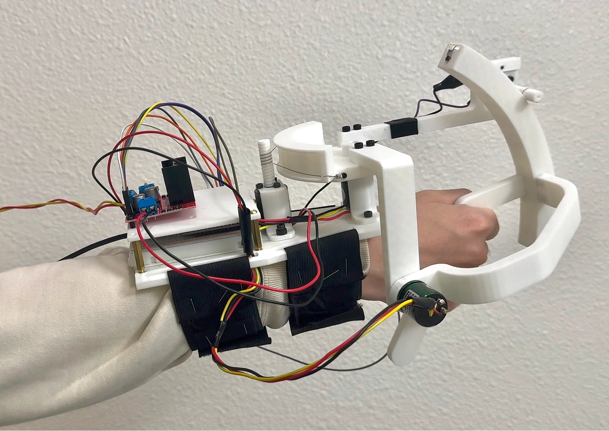
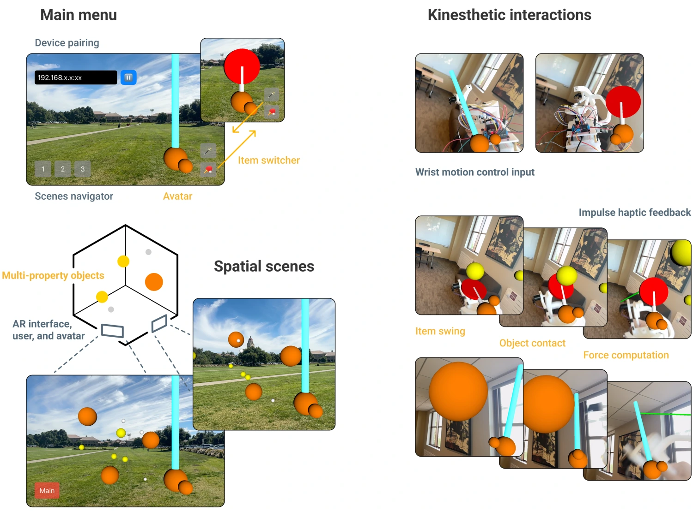

Overview

Kinesthetic Device

karP's kinesthetic device is designed to be worn on the forearm in an exoskeleton-like configuration, allowing reaction forces during kinesthetic feedback to be supported directly by the user's body. The core manipulandum employs a two-joint spherical mechanism responsible both for capturing user input and delivering impulse haptic feedback. The two joints are aligned with the user's wrist axes, making the DoF independent and allowing us to define the workspace directly from the natural range of motion.
For actuation, karP employs a classic capstan structure, amplifying the relatively weak torque output from compact brushless DC motors while ensuring smooth transmission during manipulation. Structural components are fabricated via 3D printing, assembled with screws, and connected using metal cables, relying on accessible electromechanical parts to support reproducibility.
AR Experiences

We developed karP's AR application for iOS to run on iPhones, leveraging SceneKit for scene construction, physics simulation,
and kinesthetic feedback computation, and ARKit for device camera tracking, environmental understanding, and spatial frame stabilization.
Inspired by the interaction mechanisms found in XR games, we designed a Ball Playground for karP in delivering haptic I/O experinces.
We introduce variation in the initial states of objects (static, dynamic), their physical properties (mass, radius), and the avatar's
holding items, where all are unified by the core goal of engaging users through diverse and expressive physical interactions around
the featured gesture.
BibTeX Citation
@inbook{10.1145/3715668.3735607,
author = {Pan, Zhaohan and Ge, Gaolin and Lu, Haoran and Meng, Zhihao and Wu, Hongrui and Yang, Qifeng and Liang, Jingyang},
title = {karP: an experiential prototype for Kinesthetic Augmented Reality on mobile — Playful, Portable, Producible},
booktitle = {Companion Publication of the 2025 ACM Designing Interactive Systems Conference},
year = {2025},
doi = {10.1145/3715668.3735607}
}